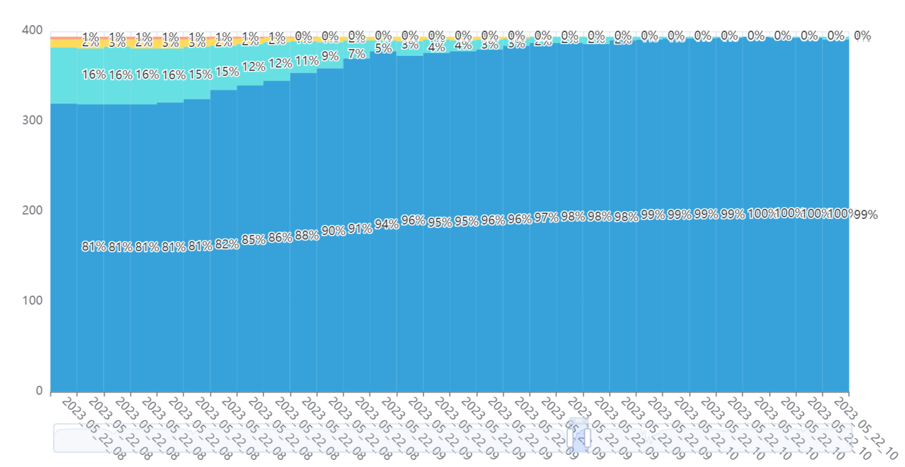
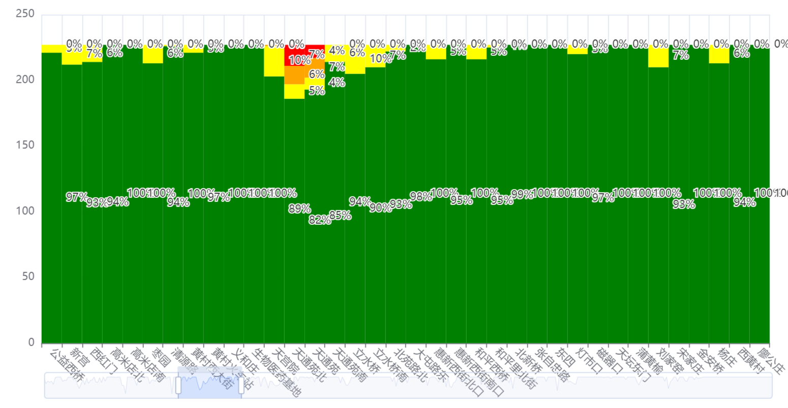
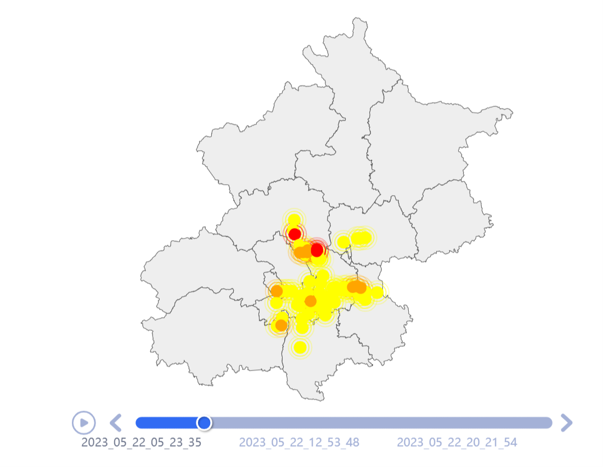

北京地铁拥挤度分析
作业简介
本作业连续7天每5min抓取北京地铁各站、站间列车拥挤度数据，统计绘制可视化数据呈现
本作业主要数据来源：map.bjsubway.com与metrodb.org
北京地铁简介
北京市地铁运营有限公司（以下简称公司）成立于1970年4月15日，是北京市市属大型国有独资公司，是国内最早成立的城市轨道交通运营企业，开通运营了新中国第一条地铁。公司定位于“保障城市运行安全，提升城市承载能力，打造成为人民满意、保障有力、国际最先进水平的轨道交通运营商”。
公司主营业务涵盖轨道交通运营服务和轨道交通增值服务。轨道交通运营服务是指轨道交通的客运、设备设施维修、城轨车辆修理、技术研发；轨道交通增值服务包含地铁广告传媒、民用通信、地铁商业、文化创意等增值服务。
截止至2021年底, 公司在职员工33073人，运营17条线路，运营里程538公里，运营车站330座，换乘车站69座。

数据综合(点击链接可以查看更详细的动态图表)
7日客流总量统计
北京地铁站名分词统计词云
使用了jieba库分词统计地铁站命名的特点，可以发现命名成分中以方向和标志性建筑为主
7日北京地铁站拥挤度分布统计柱状图
统计每5min不拥挤、轻度拥挤、拥挤、严重拥挤的车站和车站间列车段数量所占总数的比例随时间的变化，可以显著看出在晚高峰，以及周末高峰的减少。

7日北京地铁不同车站拥挤时长占比
统计每日220余次爬取中每个车站为不拥挤、轻度拥挤、拥挤、严重拥挤的次数和所占每日爬取次数的比例，可以看出那些车站在人们的通勤中起到最重要的作用

7日北京地铁拥挤车站地理位置分布随时间变化
筛选每天220余次爬取中每次拥挤的车站，利用爬取的地理经纬度信息绘制，可以看出人们主要的工作和居住区的分布
